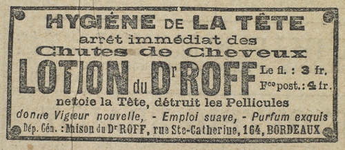

« C’est la mort que votre sourire, c’est la damnation éternelle pour celui qui s’y laisse prendre… Ah ! quelle misérable que cette femme ! … »
L’impression que Raoul avait eue, dès le début, d’assister à cette scène d’inquisition, il l’éprouva plus nettement encore devant la fureur de cet homme qui jetait l’anathème avec toute la force d’un moine du Moyen ge. Sa voix frémissait d’indignation. Ses gestes menaçaient, comme s’il allait saisir à la gorge l’impie dont le divin sourire faisait perdre la tête et vouait aux supplices de l’enfer.
– Calmez-vous, Beaumagnan, lui dit-elle, avec un excès de douceur dont il s’irrita comme d’un outrage.
Malgré tout, il essaya de se contenir et de contrôler les paroles qui se pressaient en lui. Mais elles sortaient de sa bouche, haletantes, précipitées ou murmurées, au point que ses amis, à qui il s’adressait maintenant, eurent quelquefois peine à comprendre l’étrange confession qu’il leur fit, en se frappant la poitrine, pareil aux croyants d’autrefois qui prenaient le public à témoin de leurs fautes.
« C’est moi qui ai cherché la bataille aussitôt après la mort d’Isneauval. Oui, j’ai pensé que l’ensorceleuse s’acharnerait encore après nous… et que je serais plus fort que les autres… mieux assuré contre la tentation… N’est-ce pas, vous connaissiez toute ma décision à cette époque ? Déjà consacré au service de l’Église, je voulais revêtir la robe du prêtre. J’étais donc à l’abri du mal, protégé par des engagements formels, et plus encore par toute l’ardeur de ma foi. Et je me rendis là-bas, à l’une de ces réunions spirites où je savais la trouver.
« Elle y était en effet. Je n’eus pas besoin que l’ami qui m’avait amené me la désignât, et j’avoue que, sur le seuil, une appréhension obscure me fit hésiter. Je la surveillai. Elle parlait à peu de gens et se tenait sur la réserve, écoutant plutôt en fumant des cigarettes.
« Selon mes instructions, mon ami vint s’asseoir près d’elle et engagea la conversation avec les personnes de son groupe. Puis, de loin, il m’appela par mon nom. Et je vis à l’émoi de son regard, et sans contestation possible, qu’elle le connaissait, ce nom, pour l’avoir lu sur le carnet dérobé à Denis Saint-Hébert. Beaumagnan, c’était un des douze affiliés… un des dix survivants. Et cette femme, qui semblait vivre dans une sorte de rêve, subitement s’éveilla. Une minute plus tard, elle m’adressait la parole. Durant deux heures elle déploya toute la grâce de son esprit et de sa beauté, et elle obtenait de moi la promesse que je viendrais la voir le lendemain.
« Dès cet instant, à la seconde même où je la quittai, la nuit, à la porte de sa demeure, j’aurais dû m’enfuir au bout du monde. Il était déjà trop tard. Il n’y avait plus en moi ni courage, ni volonté, ni clairvoyance, plus rien que le désir fou de la revoir. Certes, je masquais ce désir sous de grands mots ; j’accomplissais un devoir… il fallait connaître le jeu de l’ennemie, la convaincre de ses crimes et l’en punir, etc. Autant de prétextes ! En réalité, du premier coup j’étais persuadé de son innocence. Un tel sourire était l’indice de l’âme la plus pure.
« Ni le souvenir sacré de Saint-Hébert ni celui de mon pauvre d’Isneauval ne m’éclairaient. Je ne voulais pas voir. J’ai vécu quelques mois dans l’obscurité, goûtant les pires joies, et ne rougissant même pas d’être un objet de honte et de scandale, de renoncer à mes vœux et de renier ma foi.
« Forfaits inconcevables de la part d’un homme comme moi, je vous le jure, mes amis. Cependant j’en ai commis un qui les dépasse peut-être tous. J’ai trahi notre cause. Le serment de silence que nous avons fait en nous associant pour une œuvre commune, je l’ai rompu. Cette femme connaît du grand secret ce que nous en connaissons nous-mêmes. »
Un murmure d’indignation accueillit ces paroles. Beaumagnan courba la tête.
Maintenant Raoul comprenait mieux le drame qui se jouait devant lui, et les personnages qui en étaient les acteurs acquéraient leur véritable relief. Hobereaux, campagnards, rustres, oui, certes, mais Beaumagnan était là, Beaumagnan qui les animait de son souffle et leur communiquait son exaltation. Au milieu de ces existences vulgaires et de ces silhouettes falotes, celui-là prenait figure de prophète et d’illuminé. Il leur avait montré comme un devoir quelque besogne de conjuration à laquelle lui-même s’était dévoué corps et âme, comme on se dévouait jadis à Dieu en abandonnant son donjon pour partir en croisade.
Ces sortes de passions mystiques transforment ceux qu’elles brûlent en héros ou en bourreaux. Il y avait vraiment de l’inquisiteur en Beaumagnan. Au quinzième siècle, il eût persécuté et martyrisé pour arracher à l’impie la parole de foi.
Il avait l’instinct de la domination et l’attitude de l’homme pour qui l’obstacle n’existe pas. Entre le but et lui une femme se dressait ? Qu’elle meure ! S’il aimait cette femme, une confession publique l’absolvait. Et ceux qui l’entendaient subissaient d’autant plus l’ascendant de ce maître dur que sa dureté semblait s’exercer aussi bien contre lui-même.
Humilié par l’aveu de sa déchéance, il n’avait plus de colère, et c’est d’une voix sourde qu’il acheva :
« Pourquoi ai-je failli ? Je l’ignore. Un homme comme moi ne doit pas faillir. Je n’ai même pas l’excuse de dire qu’elle m’ait interrogé. Non. Elle faisait souvent allusion aux quatre énigmes signalées par Cagliostro, et c’est un jour, presque à mon insu, que j’ai prononcé les mots irréparables… lâchement… pour lui être agréable… pour prendre à ses yeux plus de valeur… pour que son sourire fût plus tendre. Je me disais en moi-même : « Elle sera notre alliée… elle nous aidera de ses conseils, de toute sa clairvoyance affinée par les pratiques de la divination… » J’étais fou. L’ivresse du péché faisait vaciller ma raison.
« Le réveil fut terrible. Un jour – il y a de cela trois semaines – je devais partir en mission pour l’Espagne. Je lui avais dit adieu, le matin. L’après-midi, vers trois heures, ayant rendez-vous dans le centre de Paris, je quittai le petit logement que j’occupe au Luxembourg. Or, il se trouva qu’ayant oublié de donner certaines instructions à mon domestique, je rentrai chez moi par la cour et par l’escalier de service. Mon domestique était sorti et avait laissé ouverte la porte de la cuisine. De loin, j’entendis du bruit. J’avançai lentement. Il y avait quelqu’un dans ma chambre, il y avait cette femme, dont la glace me renvoyait l’image.
« Que faisait-elle donc penchée sur ma valise ? J’observai.
« Elle ouvrit une petite boîte en carton qui contenait des cachets que je prends en voyage pour combattre mes insomnies. Elle enleva l’un de ces cachets et, à la place, elle en mit un autre, un autre qu’elle tira de son porte-monnaie.
« Mon émoi fut si grand que je ne songeai pas à me jeter sur elle. Quand j’arrivai dans ma chambre, elle était partie. Je ne pus la rattraper.
« Je courus chez un pharmacien et fis analyser les cachets. L’un d’eux contenait du poison, de quoi me foudroyer.
« Ainsi, j’avais la preuve irréfutable. Ayant eu l’imprudence de parler et de dire ce que je savais du secret, j’étais condamné. Autant, n’est-ce pas ? se débarrasser d’un témoin inutile et d’un concurrent qui pouvait, un jour ou l’autre, prendre sa part du butin, ou bien découvrir la vérité, attaquer l’ennemie, l’accuser et la vaincre. Donc, la mort. La mort comme pour Denis Saint-Hébert et Georges d’Isneauval. La mort stupide, sans cause suffisante.
« J’écrivis à l’un de mes correspondants d’Espagne. Quelques jours après, certains journaux annonçaient la mort à Madrid d’un nommé Beaumagnan.
« Dès lors, je vécus dans son ombre, et la suivis pas à pas. Elle se rendit à Rouen d’abord, puis au Havre, puis à Dieppe, c’est-à-dire aux lieux mêmes qui circonscrivent le terrain de nos recherches. D’après mes confidences, elle savait que nous sommes sur le point de bouleverser un ancien prieuré des environs de Dieppe. Elle y alla tout un jour, et, profitant de ce que le domaine est abandonné, chercha. Puis, je perdis ses traces. Je la retrouvai à Rouen. Vous savez le reste par notre ami d’Étigues, comment le piège fut préparé, et comment elle s’y jeta, attirée par l’appât de ce chandelier à sept branches que, soi-disant, un cultivateur aurait trouvé dans sa prairie.
« Telle est cette femme. Vous vous rendez compte des motifs qui nous empêchent de la livrer à la justice. Le scandale des débats rejaillirait sur nous, et, en jetant la pleine clarté sur nos entreprises, les rendrait impossibles. Notre devoir, si redoutable qu’il soit, est donc de la juger nous-mêmes, sans haine, mais avec toute la rigueur qu’elle mérite. »
Beaumagnan se tut. Il avait fini son réquisitoire avec une gravité plus dangereuse pour l’accusée que sa colère. Elle apparaissait réellement coupable, et presque monstrueuse dans cette série de meurtres inutiles. Raoul d’Andrésy, lui, ne savait plus que penser, et il exécrait cet homme qui avait aimé la jeune femme et qui venait de rappeler en frissonnant les joies de cet amour sacrilège…
La comtesse de Cagliostro s’était levée et regardait son adversaire bien en face, toujours un peu narquoise.
– Je ne m’étais pas trompée, dit-elle, c’est le bûcher ?…